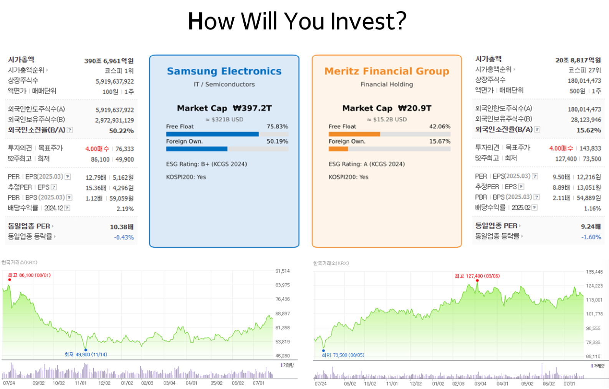
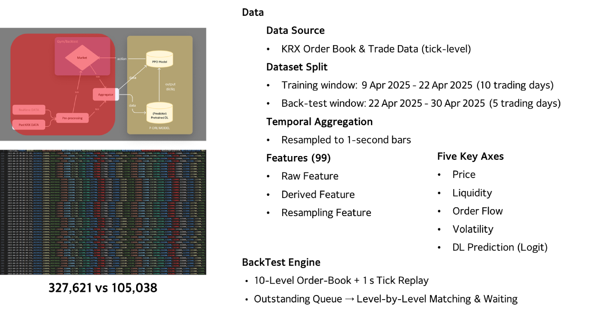
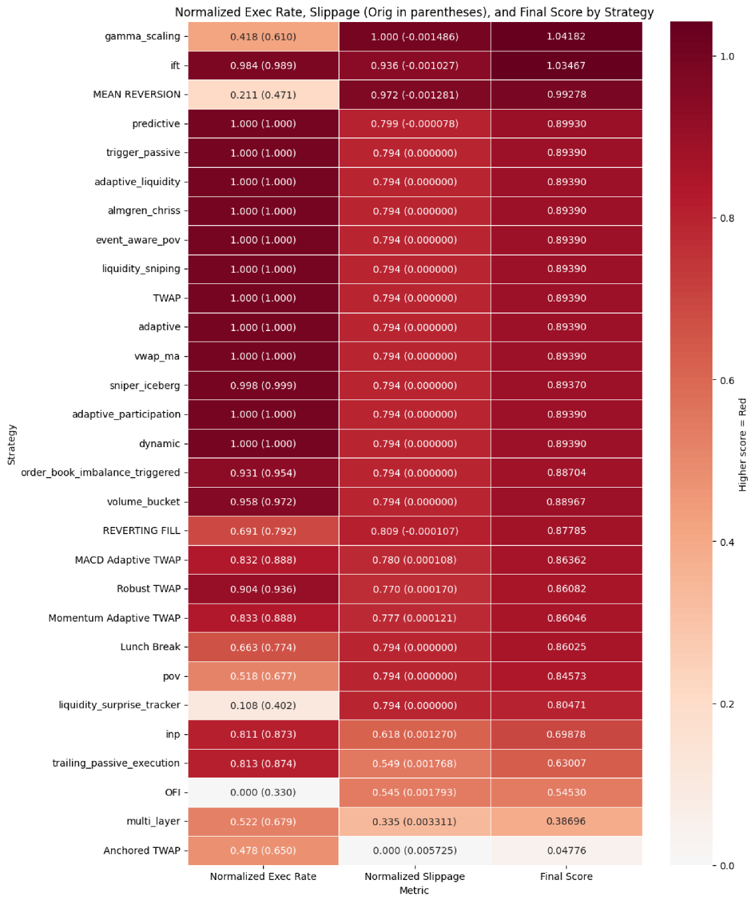

슬리피지 최소화 주식 주문집행 전략
AI 기반 주식 주문집행 알고리즘 개발
서울대학교 KDT 핀테크 AI 과정
법무법인 영진 & 한국투자증권 캡스톤
서울대학교 빅데이터·AI·핀테크 KDT 교육 과정에서 법무법인 영진을 캡스톤 파트너로, 한국투자증권 OpenAPI로 실제 KRX 틱데이터를 확보해 진행한 5인 팀 프로젝트입니다. 기관 투자자가 대량 주문을 집행할 때 발생하는 시장 충격과 슬리피지 비용을 줄이기 위해, 기존 TWAP/VWAP 같은 고정 규칙 전략의 한계를 딥러닝 예측 모델과 강화학습(PPO)으로 보완하는 동적 주문집행 알고리즘을 설계했습니다. (팀원: 김도균, 손정민, 이수빈, 이현창, 한성훈)
데이터
한국거래소(KRX) 호가장·체결장 틱데이터 · 대상 종목: 삼성전자(005930, 고유동성 대표 종목) · 메리츠금융지주(138040, 저유동성 대표 종목) · 기간: 2024.04.01 ~ 2025.04.30 (13개월) · 초당 25건 이상의 고빈도 이벤트

파이프라인 & 모델 구조
전처리된 시장 미시구조 피처를 LSTM·Transformer·RandomForest 예측 모델(Predictor DL)의 입력으로 사용하고, 그 출력을 Aggregator를 거쳐 PPO 강화학습 모델의 상태(State)로 전달합니다. PPO는 이 상태를 바탕으로 시장 상황에 맞는 주문집행 전략 비중을 동적으로 조정합니다.

전략 백테스트 & 결과
TWAP·VWAP·POV·Robust-TWAP·Anchored TWAP 등 다수의 룰베이스·적응형 전략을 자체 구현한 백테스터로 검증하고, 실행률(Exec Rate)·슬리피지·최종 스코어를 정량 비교했습니다. 일부 전략(Robust-TWAP, Pegging 등)은 슬리피지는 낮지만 체결률이 100%에 못 미치는 트레이드오프가 확인되어, PPO 보상함수에 체결률 항을 포함시켜 슬리피지와 체결률을 동시에 고려하도록 설계했습니다.
